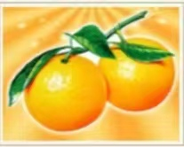
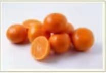
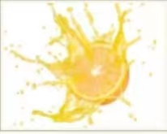
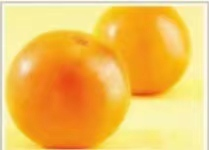
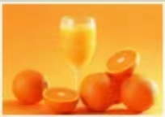

橙子简介
 桓子(学名:Citrus sinensis)是芸香科柑橘属植物橙树的果实， 亦称为柳橙、甜橙、黄果、柑子、金环、柳丁。橙是一种柑果, 它是种植了很久的混合品种,是柚子(Citrus maxima)与桶子 (Citrusreticulata)的杂交品种,起源于东南亚。果实可以剥皮鲜食其果肉。 果肉也可以用作其他食物的附加物。果实的另一个重要用途为榨汁。 营养学分析,橙子的生命力指数为13.8750。防病指数为132.50。属于有效范围。 檀子的营养价值很高,可以有效地补充多种维生索。 橙子含有大量维生素C和胡萝卜素，可以抑制致癌物质的形成, 还能软化和保护血管。促进血液循环。降低胆固醇和血脂;可使皮肤黑色索沉着减少， 从而减少黑斑和雀斑,使皮肤白皙。多吃富含维生案C的水果蔬菜， 有助于恢复皮肤弹性,防止过敏反应的发生。形态特征
檀子又叫金环、黄果，属芸香科楂物香橙的果实。原产于中国东南部。是世界四大名果之一。 橙子有甜橙和酸橙之分，酸橙又名缸橙。味酸带苦，不宜食用，大多用来制取果汁。很少鲜食, 一般鲜食以甜和为主。橙子是一种芸香科柑桶，属于常绿乔木，是最具有代表性柑橘类果树， 包括甜橙和酸橙两个基本种。枝条具刺。叶长椭因形，叶柄长。翼叶发达。花单生、 丛生或呈总状花序。白色，具反卷性。种子长椭因形或卵图形，表面灵棱纹。 橙子又称黄果。原产中国南部，南方各首均有分布。而以江西、四川、广东、 台湾、等省栽培较为集中。15世纪初从中国传入欧洲，15世纪末传入美洲。 果圆形至长圆形，橙黄色。油胞凸起，果皮不戛剥离，无苦味，中心柱充实， 汁味甜而香，含有大量的糖和一定星的柠檬酸以及丰富的维生索C，营养价值较高， 果实还含维生素P，具极高的医药价值。根据营养学家分析,橙子的生命力指数为13.8750， 防病指数为132.50，属于有效范围。新鲜橙子
   